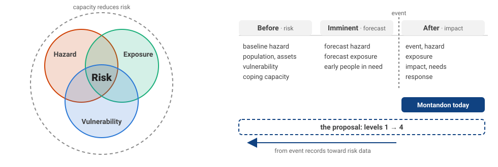
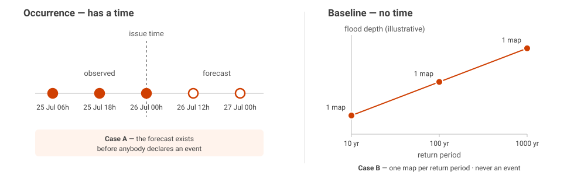
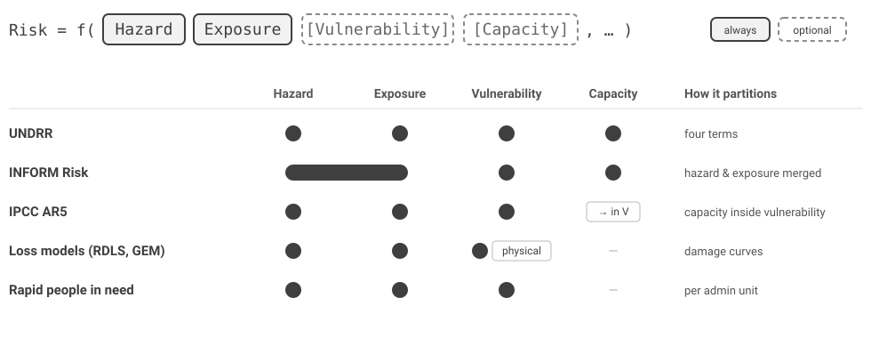
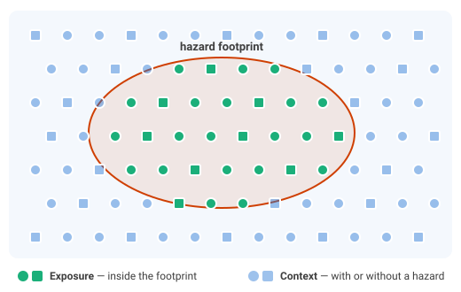
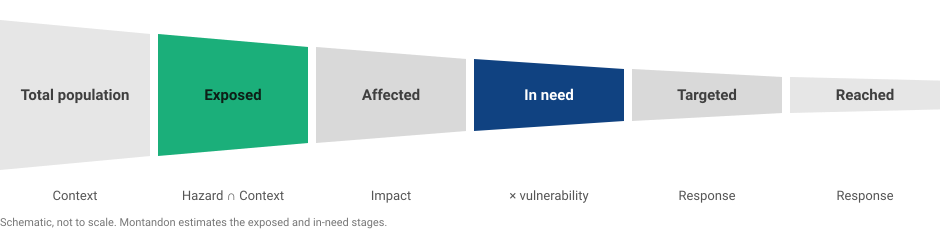
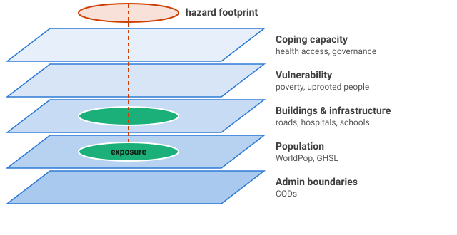
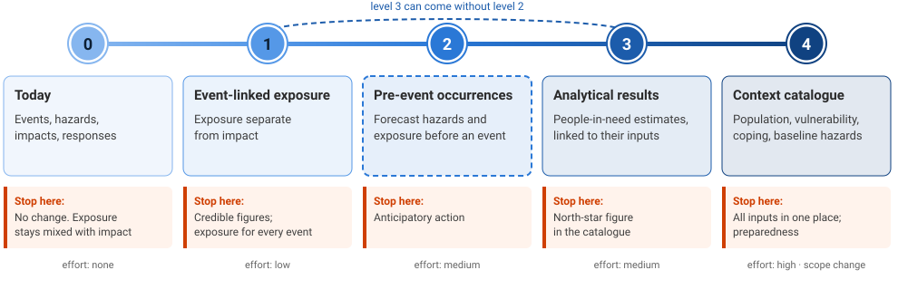
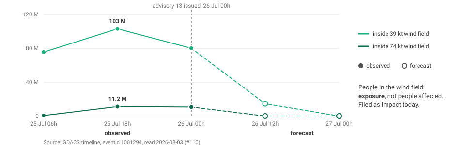
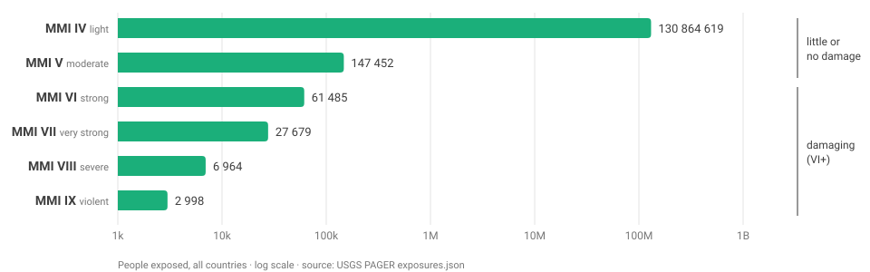

Risk Model Options: Ontology and Integration Levels
Status: Proposal for discussion, version 2 (12 November 2026). It is not a decision. It answers the action from the core-partner call of 23 September 2026 in discussion #110: "propose options for an updated data model, with diagrams". Version 2 adds the production analysis of 29 September and the review of 20 October (§1.1, §1.2), and records the answers given so far (§10). This document is about the ontology: the concepts, their definitions and their relations. It does not define schema fields. Schema work starts after the partners choose a level (§7).
Contributors: @emmanuelmathot (author), @arunissun (production analysis), @arnauroviramuntada (review and forecast metadata), @wrynearson, @p-phung, @nicolepaul. Comments on this version are collected in a shared working document. This file follows that discussion.
1. The question
Discussion #110 started with two gaps in the impact model:
- Forecast vs observed. The partners agree that Montandon must identify a forecast, and keep the class of
the item (Hazard, Exposure or Impact). The form is open: an item-level
monty:forecastobject (option 1b), the STACforecastextension, or both (#168, #178). - Exposure vs impact. The partners agree that exposure is not impact. The representation is open: a clear exposure value inside Impact as an interim step (option 2b), or a separate class with its own collections (option 2c). The source-by-source review is in #169.
The core-partner calls of 9 and 23 September 2026 moved the question up one level:
- Can a hazard exist without an event? If yes, Montandon collects data outside of an event.
- The partners prefer the INFORM concepts: Hazard & Exposure, Vulnerability, Lack of coping capacity.
- The north star is to estimate people in need for forecast, imminent and recent events.
This document gives the concepts (§2–§4), the ontology (§5), and a ladder of integration levels (§7). The partners choose a target level on the ladder.
1.1 Where Montandon is today
On 29 September 2026, @arunissun sampled all 27 collections of the production API: about 107 000 recent items from 11 sources (analysis in #110). It is a sample, not a full audit. The main results:
| Level (§7) | What production holds | Evidence |
|---|---|---|
| 0 | Events, hazards, impacts | 23 of the 27 collections fit one concept as published. All 11 event and all 7 hazard collections fit |
| 1 (exposure) | The content exists, but it is filed as impact | 18 710 exposure items: 29 % of the sampled impact items. All of pdc-impacts, 63 % of gdacs-impacts, part of ifrcevent-impacts |
| 2 (forecast) | Only on GDACS cyclone impacts, with an undeclared forecasted flag |
It is a forecast of exposure, not of harm |
| 3 (people in need) | Nothing | in_need and targeted are used by 0 items |
| 4 (Context, baseline hazards) | Nothing | No such collection |
The four collections that do not fit are all impact collections: pdc-impacts, gdacs-impacts,
usgs-impacts (PAGER alert bins are probabilistic loss, not exposure) and ifrcevent-impacts
(loss, response reach and at-risk figures together).
Consequence: Montandon is at Level 0, and the content of Level 1 already exists, filed in the wrong place.
1.2 Status of the discussion
Agreed in #110:
| Point | Source |
|---|---|
| Exposure is not impact. A count of people or assets in a hazard footprint does not imply harm | @wrynearson, @p-phung, @arunissun, @arnauroviramuntada |
| Montandon identifies forecasts, and keeps the class of the item (Hazard, Exposure, Impact) | @arnauroviramuntada (20 October), @arunissun |
| Target for the current phase: up to Level 2 | @arnauroviramuntada: "consolidate Montandon up to Level 2"; @arunissun: "target Level 2" |
| Level 2 applies only to hazards that have forecasts. The minimum fields can differ per hazard type | @arunissun; @arnauroviramuntada; §9.2 (earthquakes) |
| Levels 3 and 4 are not in the current phase | @arnauroviramuntada: "in later phases"; @arunissun: Level 3 only as an experiment, Level 4 as links |
The two topics run as parallel tracks (@arnauroviramuntada, 20 October): exposure and impact is mainly an ontology question; forecast is mainly a metadata question.
Open: the questions in §10.

2. Two meanings of "hazard"
The word "hazard" has two meanings. The question "can a hazard exist without an event?" mixes them.
| Hazard occurrence | Baseline hazard | |
|---|---|---|
| Example | Cyclone NOUL-26 track, 26 July 2026 | 1-in-100-year flood depth map of Nepal |
| Time | A date, or a forecast valid time | No occurrence time. A return period or an annual probability |
| Becomes an event? | Yes, or it is one already | Never. It is a statistic over many possible events |
| Sources | GDACS, USGS, PDC, IBTrACS | JRC flood hazard maps, GEM seismic hazard, GIRI |
| In Montandon today | Yes | No |

Thus there are two cases of "hazard without an event":
- Case A — a pre-event occurrence. A forecast track exists, but nobody has declared an event yet. It becomes an event, or it dissipates.
- Case B — a baseline hazard. It describes a place, not an occurrence. It never becomes an event.
Both cases are a Hazard without an event. A qualifier must tell a baseline hazard from an occurrence. Without it, a 100-year flood map is counted in a query such as "hazards in Nepal in 2026".
3. A risk function with an open signature
The UNDRR defines disaster risk as the potential loss "determined probabilistically as a function of hazard, exposure, vulnerability and capacity" (UNDRR terminology). We write it as a function with an open signature:
Hazard and exposure are always present. The other arguments are optional. Each framework is one
implementation of f. Each one selects its arguments and draws its own boundaries between them:
Implementation of f |
Arguments | How it partitions |
|---|---|---|
| UNDRR | hazard, exposure, vulnerability, capacity | four terms |
| INFORM Risk | (hazard & exposure), vulnerability, lack of coping capacity | hazard and exposure in one dimension; social vulnerability |
| IPCC AR5 | hazard, exposure, vulnerability | vulnerability includes "lack of capacity to cope and adapt" |
| Loss models (RDLS, GEM) | hazard, exposure, fragility | physical vulnerability (damage curves) |
| Rapid people-in-need estimate (§4) | hazard footprint, exposed population, vulnerability factor | per admin unit |

Consequence for Montandon: Montandon stores the arguments. The analysis selects f.
This matches the position from the 23 September call: analytical frameworks belong to specialised
processors, and Montandon collects, structures and documents the source data.
A dataset that one framework calls "vulnerability" and another calls "coping capacity" is then a value to discuss. It is not a change of the model.
4. The key test, and what people in need requires
4.1 Is the data tied to a hazard?
Use this test: if the hazard footprint changes, does the number change?

| Figure | Tied to a hazard? | Concept |
|---|---|---|
103 M people in the 39 kt wind field (GDACS pop39) |
Yes | Exposure |
| 12 hospitals in the flood extent | Yes | Exposure |
| 1200 deaths reported | Yes | Impact |
| WorldPop population grid of Nepal | No | Context (§5.2) |
| 40 % of a district below the poverty line | No | Context — vulnerability |
| 0.3 physicians per 1000 people | No | Context — coping capacity |
| Admin boundaries (CODs) | No | Context |
Exposure is where the two kinds of data meet:
Exposure = hazard footprint ∩ population or assets.
Exposed elements are people and assets: buildings, infrastructure (roads, bridges, hospitals, schools, ports, airports, power plants), crops and livestock. The Montandon "Exposure Category" taxonomy already lists them. A people-in-need estimate uses only the people part of the exposure. This is why INFORM puts "Hazard & Exposure" in one dimension. It is also why the 23 September call noted that "the exposure and hazard link is pretty obvious".
4.2 How people in need is estimated
The humanitarian chain is: total population → exposed → affected → in need → targeted → reached.

There are two families of method:
| Assessment-based | Rapid, model-based | |
|---|---|---|
| Used by | OCHA HNO, JIAF 2.0 | Anticipatory action, DREF, first 72 hours |
| When | Weeks after the event | Before the event (forecast) or in the first days |
| Method | Severity per area and population group, from needs assessments | Exposure per intensity band, multiplied by a vulnerability factor |
| Role of Montandon | Very small (field survey data) | This is the Montandon case |
A simple form of the rapid method, per admin unit:
PIN(admin) = sum over intensity bands b of
exposed_population(admin, b) × p_need(b, vulnerability(admin))
| Input | Concept | In Montandon today? |
|---|---|---|
| Hazard footprint with intensity bands | Hazard | Yes |
| Exposed population per band | Exposure | Partly (GDACS, filed as impact) |
| Population grid, vulnerability, admin boundaries | Context | No |
Past impacts, to calibrate p_need |
Impact | Yes — the impact archive is a strong asset |
Consequence: a people-in-need estimate needs exposure at the time of the event and vulnerability data that exists before the event. An event-only Montandon gives the first input and the calibration data. It does not give the second input.
5. The ontology
5.1 Concepts and relations
flowchart LR
Response[Response]
Event([Event])
Hazard[Hazard<br/>occurrence or baseline]
Exposure[Exposure<br/>= footprint ∩ people, assets]
Impact[Impact]
Need[People in need<br/>estimate]
Context[(Context<br/>population · assets<br/>vulnerability · coping capacity)]
Response == addresses ==> Event
Event -. groups .-> Hazard
Hazard == "footprint of" ==> Exposure
Hazard -. causes .-> Impact
Exposure -. "is the base of" .-> Impact
Exposure == "input to" ==> Need
Impact -. "calibrates (past events)" .-> Need
Response -. informs .-> Impact
Context -. "population, assets in" .-> Exposure
Context -. "vulnerability, coping" .-> Need- Thick arrow = mandatory: every instance of the source concept must have this relation. Dashed arrow = optional.
- Mandatory relations: a Response addresses an Event; an Exposure is always the footprint of a Hazard; a People-in-need estimate always uses an Exposure. All other relations are optional.
- Relations are links. Two linked concepts do not share a data model.
- Forecast is a qualifier, not a concept. It applies to Hazard, Exposure, Impact and People in need.
It carries an issue time and a valid time (
monty:forecast, #110 option 1b). - Context has no stored link to an event or a hazard. It is found at query time, by location or by country.
5.2 Context: data that is not tied to a hazard
Population grids, poverty indices, coping indicators and admin boundaries are not tied to a hazard. Montandon calls this concept Context: the conditions of a place or a population that do not depend on a hazard.

The term comes from the JIAF 2.0 pillar "Context": the political, socio-cultural, economic, demographic, security and infrastructure characteristics of the area. Humanitarian analysts know it, and it does not belong to one risk framework.
A note on the word "exposure". In risk modelling, "exposure" often means the inventory of people or assets in an area, before any hazard footprint is applied. The RDLS exposure component and the CLIMADA exposures use it this way, and so does PAGER internally. The 20 October review in #110 recommends two precise terms to avoid this ambiguity: population and asset inventories, and hazard exposure. This document uses them as follows:
- Context holds the population and asset inventories (with the other data not tied to a hazard).
- Exposure always means hazard exposure: the part of the inventories inside a hazard footprint, for a stated intensity threshold. The hazard need not be an event (§2, case B).
Context is a main input of a people-in-need estimate (§4.2). It is not secondary data.
"Context" is not an INFORM term. INFORM Risk puts this data in two dimensions: Vulnerability and Lack of coping capacity. INFORM Severity uses three dimensions: Impact of the crisis, Conditions of affected people, Complexity of the crisis. The glossary (§6) shows the INFORM terms next to Context.
5.3 Vulnerability and coping capacity: concepts, or kinds of Context?
If Context holds population, poverty and coping indicators, two answers are possible:
- Kinds of Context. Vulnerability and coping capacity are categories of Context data.
- For: fewer concepts. The partition of each framework (§3) becomes a category value.
- Against: they are less visible than Hazard and Exposure.
- Concepts of their own. Vulnerability and Coping capacity are at the same level as Hazard and Exposure.
- For: this matches the INFORM picture that the partners prefer.
- Against: a dataset on the boundary (for example health access) forces a choice that another framework does not make.
In both answers, the glossary gives Vulnerability and Coping capacity one precise definition each.
6. Glossary and crosswalk
6.1 Montandon terms next to other frameworks
| Montandon term | Definition (draft) | UNDRR | INFORM | JIAF 2.0 | RDLS | IPCC AR5 |
|---|---|---|---|---|---|---|
| Event | A real-world disaster occurrence, observed or forecast, as reported by a source | hazardous event, disaster | crisis (Severity) | shock | event | — |
| Hazard, occurrence | A hazard process at a given time and place, with an intensity. Observed or forecast | hazardous event | Natural, Human hazard | shock | hazard footprint | hazard |
| Hazard, baseline | The probability or return period of a hazard intensity at a place. No occurrence time | hazard | Hazard & Exposure (hazard part) | — | hazard | hazard |
| Exposure (hazard exposure) | People or assets inside a hazard area, for an intensity threshold | exposure | Hazard & Exposure (exposure part) | — | exposure (with a hazard footprint) | exposure |
| Context | Conditions of a place or a population that do not depend on a hazard. Includes the population and asset inventories | — | Vulnerability; Lack of coping capacity | context | exposure (inventory) | — |
| Vulnerability | Social and economic conditions of a population that increase the harm | vulnerability | Vulnerability | context; humanitarian conditions (in part) | vulnerability (physical) | vulnerability (includes lack of coping capacity) |
| Coping capacity | Ability of institutions and infrastructure to absorb the shock | capacity, coping capacity | Lack of coping capacity (inverse) | humanitarian conditions: coping mechanisms (households) | — | inside vulnerability |
| Impact | Observed or estimated effect of a hazard on people or assets | disaster impact, loss | Impact of the crisis (Severity) | impact | loss | impact |
| People in need | Estimated number of people who need assistance | — | Conditions of affected people (Severity) | humanitarian conditions → people in need | — | — |
| Response | An action taken, or a product made, in response to an event | response | — | — | — | — |
| Forecast (qualifier) | A figure about a future valid time, with an issue time | early warning | INFORM Warning (in development) | forecast needs | analysis type | projection |
Two traps:
- Social or physical vulnerability? INFORM means social vulnerability: indices per country or admin unit. RDLS and engineering mean physical vulnerability: damage curves per building type. The proposed Montandon meaning is social. Physical vulnerability is out of scope for now.
- Past impacts can be an input to vulnerability. INFORM uses "recent shocks" as a vulnerability indicator. The Montandon impact records can feed such an indicator. They stay Impact records.
6.2 Montandon terms in the STAC collections
This table shows where each concept lives in STAC, and how it links. It does not define fields. Names in italics are working names.
| Term | Level (§7) | STAC role | Collections | Detail object | monty:hazard_codes |
Time |
|---|---|---|---|---|---|---|
| Event | 0 | event + source or reference |
<source>-events |
— | required | occurrence |
| Hazard, occurrence | 0 | hazard |
<source>-hazards |
monty:hazard_detail |
required | occurrence; monty:forecast if forecast |
| Hazard, baseline | 4 | hazard |
<dataset>-hazards |
monty:hazard_detail + baseline qualifier |
required | validity period |
| Exposure | 1 | exposure |
<source>-exposure |
monty:exposure_detail |
required | time of its hazard |
| Context | 4 | context |
one per dataset, for example worldpop-population, inform-risk |
monty:context_detail, + product extension |
not required | release or reference year |
| Vulnerability, Coping capacity | 4 | a category of Context, or their own roles (§5.3) | as Context | as Context | not required | as Context |
| Impact | 0 | impact |
<source>-impacts |
monty:impact_detail |
required | period of the estimate |
| People in need | 3 | need |
<workflow>-need |
to define | required | time of the estimate; monty:forecast if before the event |
| Response | 0 | response |
<source>-response |
monty:response_detail |
required | publication or action window |
| Forecast | 2 | — (qualifier) | — | monty:forecast |
— | issue time, valid time |
| Relation | Meaning | Carried by | Level |
|---|---|---|---|
| Hazard → Event | the occurrence belongs to the event | related link with roles: ["event"]; query-time correlation for pre-event items (§8.1) |
0, 2 |
| Exposure → Hazard | exposure to this footprint and threshold | related link with roles: ["hazard"], required |
1 |
| Exposure → Context | the population or asset data used to compute the exposure | derived_from link |
1, 4 |
| Impact → Hazard | effect of this hazard | related link with roles: ["hazard"] |
0 |
| Impact → Response | figure taken from a response product | derived_from link |
0 |
| People in need → inputs | exposure, context and impacts used, with their versions | derived_from links (external URL if the input is not in Montandon) |
3 |
| Context ↔ Hazard, Event | the context of a place | no stored link: query by location or monty:country_codes |
4 |
| Response → Event, Hazard | what the response addresses | as today (Response) | 0 |
7. Levels of integration
The options are a ladder. Each level adds concepts to Montandon. The partners choose a target level and a path to it. The levels are mostly cumulative. Level 3 can come without level 2.

| Level | Montandon holds | What it adds | Rules relaxed | New pipelines | People-in-need support | Main risk |
|---|---|---|---|---|---|---|
| 0 — Today | Events, hazards, impacts, responses | — (exposure filed as impact, potentially_affected) |
— | — | Low | Exposure read as impact (credibility) |
| 1 — Event-linked exposure | + Exposure for event occurrences | Exposure separate from impact | None | Migrate GDACS, CEMS, USGS PAGER | Exposure available | Small |
| 2 — Pre-event occurrences | + forecast hazards and exposure before an event exists | Anticipatory action | "A hazard is always linked to an event" (forecasts) | Forecast feeds (GDACS, PDC) | Early exposure | Links only at query time |
| 3 — Analytical results | + people-in-need estimates, linked to their inputs and versions | North-star figure in the catalogue | None | Write-back from notebooks (open decision, 16 September call) | Result stored | Montandon publishes a people-in-need figure: accountability |
| 4 — Context catalogue | + Context (population, vulnerability, coping, boundaries) + baseline hazards | Preparedness with no active event | "A hazard is always linked to an event" (baseline hazards); monty:hazard_codes required (not for Context) |
Yearly harvests (INFORM, WorldPop, CODs, hazard maps) | All inputs in one place | Scope change; duplicate of INFORM, HDX, RDL catalogues; drift to IFRC-specific needs |
flowchart LR
Event([Event]):::l0
Hazard[Hazard<br/>occurrence]:::l0
Impact[Impact]:::l0
Response[Response]:::l0
Exposure[Exposure]:::l1
Forecast{{forecast<br/>qualifier}}:::l2
Need[People in need]:::l3
Context[(Context)]:::l4
Baseline[Hazard<br/>baseline]:::l4
Response ==> Event
Event -.-> Hazard
Hazard -.-> Impact
Hazard ==> Exposure
Exposure -.-> Impact
Forecast -.-> Hazard
Forecast -.-> Exposure
Exposure ==> Need
Impact -.-> Need
Context -.-> Need
Context -.-> Exposure
Baseline -.-> Exposure
classDef l0 fill:#86b6ef,stroke:#5598e7,color:#0d1f33
classDef l1 fill:#5598e7,stroke:#2a78d6,color:#0d1f33
classDef l2 fill:#2a78d6,stroke:#1c5cab,color:#fff
classDef l3 fill:#1c5cab,stroke:#104281,color:#fff
classDef l4 fill:#104281,stroke:#0d366b,color:#fffColours: light blue = level 0, darkest blue = level 4. Thick arrow = mandatory relation. Dashed arrow = optional relation (see §5.1).
7.1 The arguments, per level
Level 1 closes the credibility gap raised in #110: 103 million people in a wind field must not read as 103 million people affected. It changes no rule. It is a precondition for every higher level.
Level 2 supports anticipatory action. The data keeps its current shape (occurrences). The cost is forecasts that never become events. They stay as items with no event, and a client finds related events at query time (§8.1).
Level 3 puts the north-star figure in the catalogue, but Montandon does not harvest the baselines. The inputs stay external and are cited with their versions. The cost is accountability. A people-in-need figure published by Montandon will be used as an official figure.
The production analysis (#110) recommends Level 3 only as an experimental collection: labelled modelled and experimental, versioned, and not presented as official IFRC figures. It sets four conditions first:
| Condition | Meaning |
|---|---|
| Level 1 is stable | Exposure is stored as its own concept. Otherwise an estimate starts from mislabelled input |
| Provenance | Each estimate records its method and version, and its inputs and their versions (derived_from links) |
| A named accountable owner | One team answers for the method and its results |
| Back-testing | The method is tested on past events with the impact archive, and its skill is published first |
Level 4 gives all the inputs in one catalogue, and supports preparedness when no event is active. It is the largest change of scope. Montandon has historically focused on event data. Each new dataset adds quality work, and the event list itself is not complete yet. INFORM, HDX and the Risk Data Library already publish many of these datasets.
The production analysis recommends links before hosting: Montandon points to the Context datasets of their publishers (for example WorldPop, which has its own STAC API), and hosts a dataset only when a use case cannot work with a link. Hosting data is a scope and cost decision of its own (#178).
8. Supporting choices
8.1 Pre-event items: link at query time
A pre-event item does not store a link to an event. The dynamic correlation finds related items at query time (hazard codes, countries, time, and optionally location).
- One forecast can match several events (for example one event per country). This is the reality. It is not an error. A client that wants one best match needs a ranking.
- The result depends on the correlation rules. Thus the correlation query must be named and versioned, and an analysis must record the version that it used.
8.2 Context datasets in STAC
A Context dataset is a dataset, not a stream of records. It is one item per dataset release (or per country, if the dataset is large), with raster (COG) or table (Parquet) assets. It is not one item per indicator and per admin unit.
The product extension can describe the product family
(product:type) and the release cadence (product:timeliness, for example P1Y for a yearly release).
It describes packaging and distribution, not meaning. Its maturity is "Proposal".
product:status overlaps monty:response_detail.status. Do not use it before this overlap has a rule.
9. Worked examples
9.1 Cyclone NOUL-26 up the ladder
GDACS event 1001294, episode 13 (#110).

| Level | What Montandon holds for NOUL-26 |
|---|---|
| 0 | Event and hazard items. pop39 = 103 014 755 filed as an impact, type potentially_affected |
| 1 | pop39 and pop74 become Exposure items. Each one links to the hazard item and states its wind threshold (39 kt, 74 kt). The impact collection holds only effects |
| 2 | The forecast track positions (advisory 13, actual: False) are hazard items with monty:forecast (issue time 26 Jul 00:00, valid time 27 Jul 00:00). Their exposure items exist before any event is declared |
| 3 | A notebook combines the exposure per wind band with district vulnerability, and writes a people-in-need estimate per district. The item links to the exposure items and to the vulnerability dataset release that it used |
| 4 | The population grid and the district vulnerability dataset are Context items in Montandon. The notebook finds them by location |
9.2 Earthquake in the Southern Tibetan Plateau up the ladder
USGS event us6000pi9w: M 7.1, Dingri County, 7 January 2025. PAGER alert: red for economic losses,
orange for fatalities. The repository already has its event,
ShakeMap hazard and
PAGER impact items.
PAGER population exposure by shaking intensity (MMI), from json/exposures.json:
| Country | MMI IV (light) | MMI V | MMI VI | MMI VII | MMI VIII | MMI IX (violent) |
|---|---|---|---|---|---|---|
| China | 611 107 | 145 506 | 61 485 | 27 679 | 6 964 | 2 998 |
| Nepal | 19 339 548 | 1 942 | 0 | 0 | 0 | 0 |
| India | 96 979 504 | 4 | 0 | 0 | 0 | 0 |
| Bangladesh | 13 802 713 | 0 | 0 | 0 | 0 | 0 |
| All countries | 130 864 619 | 147 452 | 61 485 | 27 679 | 6 964 | 2 998 |

| Level | What Montandon holds for the earthquake |
|---|---|
| 0 | Event, ShakeMap hazard, and two PAGER impact items: 858 fatalities and USD 1 billion of losses, both modelled. exposures.json is only an asset. It is not mapped |
| 1 | One Exposure item per country and MMI level, linked to the ShakeMap hazard. The 130.9 million people at MMI IV felt light shaking. They were not harmed. As an exposure, this figure cannot be read as an impact. The reported toll (126 deaths, Chinese authorities) and the PAGER estimate (858) are both Impact items. Their provenance is different (primary vs modelled) |
| 2 | Not applicable. An earthquake is not forecast. This is why level 2 is optional: for some hazard types, it adds nothing |
| 3 | A people-in-need estimate uses the exposure at MMI VI and above. Here the main vulnerability factor is physical: PAGER notes that most people live in "adobe block and unreinforced brick" buildings. Social vulnerability (§6.1) is a second factor |
| 4 | Context holds the population grid and building-stock data for the region. A seismic hazard map of the Himalaya (GEM) is a baseline hazard: a hazard without an event. INFORM has no subnational model for Nepal (§11) |
What this example adds to NOUL-26:
- Level 2 depends on the hazard type. Cyclones and floods have forecasts. Earthquakes do not.
- Exposure crosses borders. The event is in China, but most of the exposed people are in India and Nepal. Exposure items per country make this visible.
- Physical vulnerability matters. For earthquakes, building type drives the harm. The decision to use only social vulnerability (§6.1, question 3) must consider this case.
- Secondary hazards. PAGER reports landslides and liquefaction. They are concurrent hazards of the same event.
10. Questions for the partners
The answers so far come from #110: the production analysis of 29 September (answers, new questions) and the review of 20 October (comment).
| # | Question | Answers so far | Status |
|---|---|---|---|
| 1 | What is the target level, and what is the path to it? | Level 2 for the current phase. Path: Level 1 first (reclassify PDC, split GDACS, move DREF at-risk figures, add PAGER exposure, re-type PAGER alert bins), then the forecast qualifier, starting with GDACS cyclones | Converging (§1.2) |
| 2 | How is exposure represented: interim value in Impact (2b), or separate class (2c)? | 2b as an interim step, piloted on GDACS, then decide on 2c. A full source-by-source review first | Open, #169 |
| 3 | Which forecast fields, and where? A monty:forecast object, the STAC forecast extension, or both? Which fields are mandatory per hazard type? |
Proposed table of forecast metadata (20 October). First mapping to the STAC forecast extension in #178 |
Open, #168 |
| 4 | Are Vulnerability and Coping capacity concepts of their own, or kinds of Context (§5.3)? | Concepts of their own: this matches INFORM, and they are separate inputs of a people-in-need estimate | One answer; to confirm |
| 5 | Does Vulnerability mean social vulnerability in Montandon (§6.1)? | Yes, but reserve a name for physical vulnerability (building stock). PAGER results already include physical vulnerability, so they are modelled Impact, not exposure | One answer; to confirm |
| 6 | For Level 3: who is accountable for a people-in-need figure that Montandon publishes? | A named owner per method. Montandon stores inputs and results unaltered, with the version trail. The partners' governance decides if a figure is official | One answer; Level 3 is not in the current phase |
| 7 | For Level 4: which Context datasets are necessary, and which stay with their publishers (INFORM, HDX, RDL)? | Few datasets, all linked, none hosted: population (WorldPop or GHSL), admin boundaries (OCHA CODs), vulnerability (INFORM, HDX HAPI), hazard maps (JRC, GEM — GEM needs a licence review) | One answer; Level 4 is not in the current phase |
| 8 | Are Hazard and Exposure for physical hazards only? Epidemics, road accidents and fires have no footprint (72 % of DesInventar events are disease outbreaks) | — | New |
| 9 | Which estimate_type values can be trusted? GDACS marks modelled figures as primary |
— | New |
| 10 | How are "affected" figures defined? Do the populations overlap? Is total affected the sum of directly and indirectly affected? | — | New (20 October review) |
| 11 | Does Montandon stay a catalogue of metadata and links, or also store harmonised copies of hazard data? Who pays and operates the store? | — | New, #178 |
11. Facts checked, and open points
| Fact | Status |
|---|---|
| UNDRR disaster risk: "function of hazard, exposure, vulnerability and capacity" | Checked (UNDRR) |
| IPCC AR5 vulnerability includes "lack of capacity to cope and adapt" | Checked (IPCC WGII AR5 glossary) |
| JIAF 2.0 pillar "Context" covers demographic, socio-economic, infrastructure characteristics | Checked (IASC JIAF 2.0) |
| JIAF 2.0: exact name of the fifth pillar (current and forecast priority needs) | To verify in the JIAF technical manual |
| INFORM Severity dimensions: impact, conditions of affected people, complexity | Checked (ACAPS) |
| INFORM Warning is in development | Checked (DRMKC) |
| INFORM subnational models: Bangladesh and Myanmar exist; no model for Nepal | Checked (DRMKC). Important for the Nepal use case |
| The MapAction method for Use Case 1 follows the rapid form of §4.2 | To verify with MapAction |
Earthquake us6000pi9w: PAGER exposure per MMI, alert levels, building-type comment |
Checked (USGS PAGER exposures.json, alerts.json, comments.json, read 25 September 2026) |
Earthquake us6000pi9w: reported toll of 126 deaths |
Checked (Chinese state media, 7 January 2025). Other sources report higher figures |
References
- Discussion #110 — two gaps in the impact model
- Production analysis, 29 September 2026 — 27 collections, about 107 000 items
- Review of 20 October 2026 — exposure terms, forecast metadata table
- Discussion #168 — forecast products and STAC attributes
- #169 — exposure across Montandon sources
- #174 — impact model restructuring
- #178 — hazard data and forecasting interoperability
- Montandon model overview
- Response ↔ Impact Boundary Rules
- STAC-based correlation algorithms
- INFORM — Risk, Severity, Warning, subnational models
- Risk Data Library Standard and its exposure component
- CLIMADA exposures
- STAC forecast extension
- UNDRR terminology
- STAC product extension